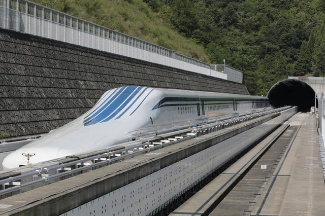
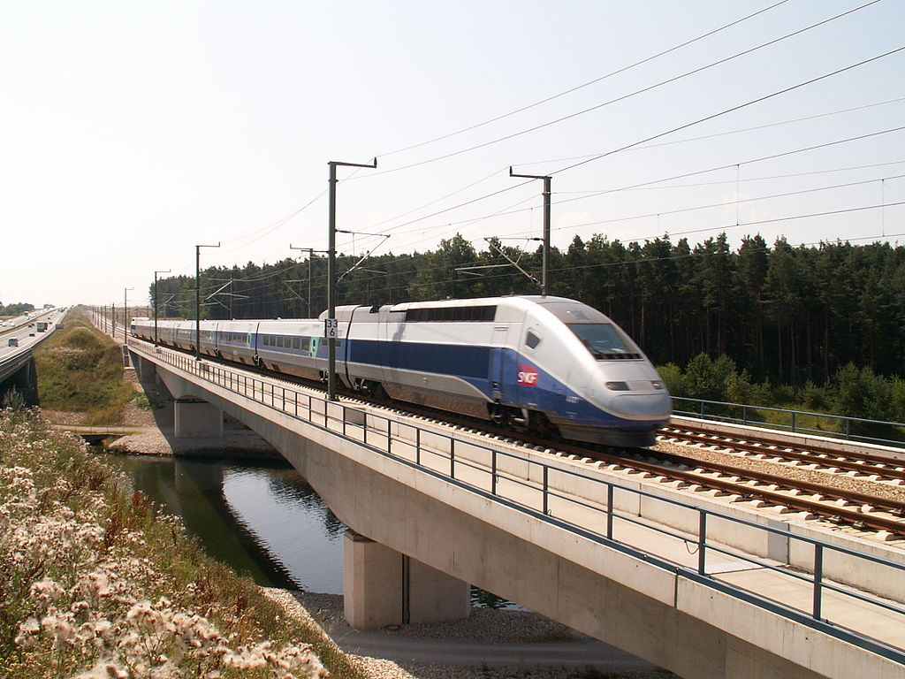
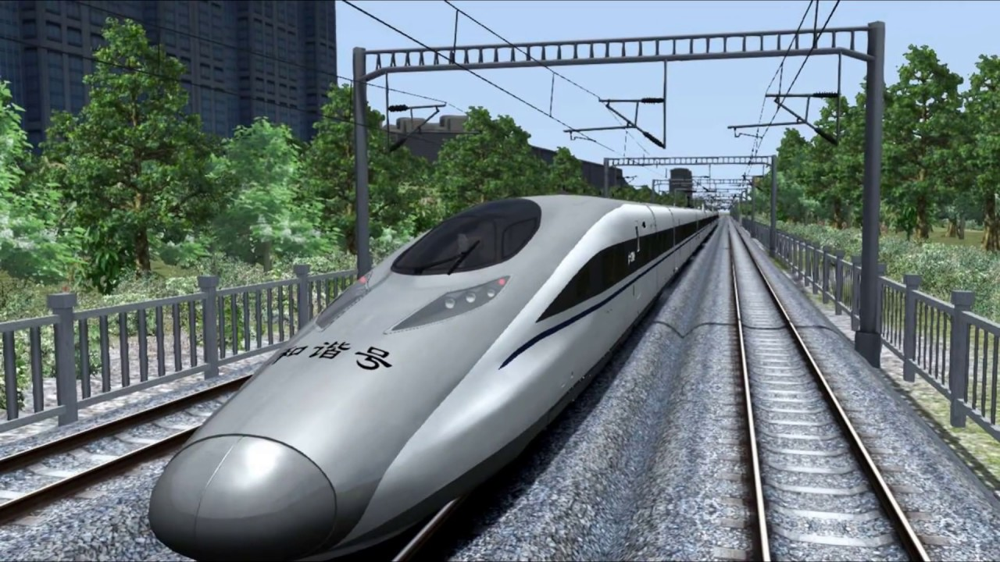
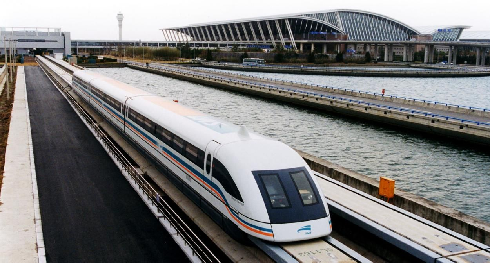
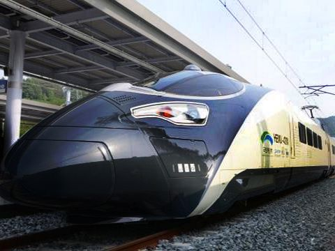
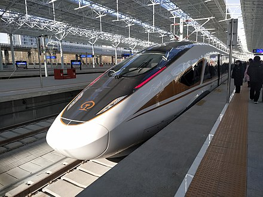
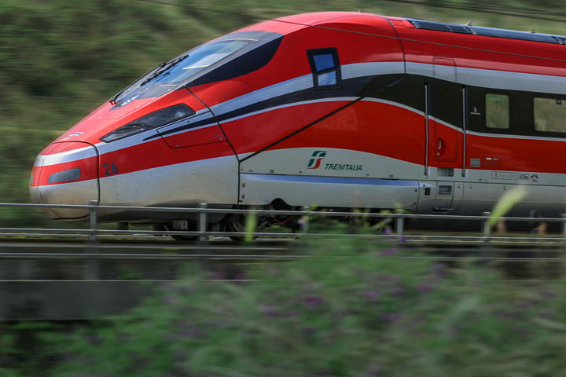
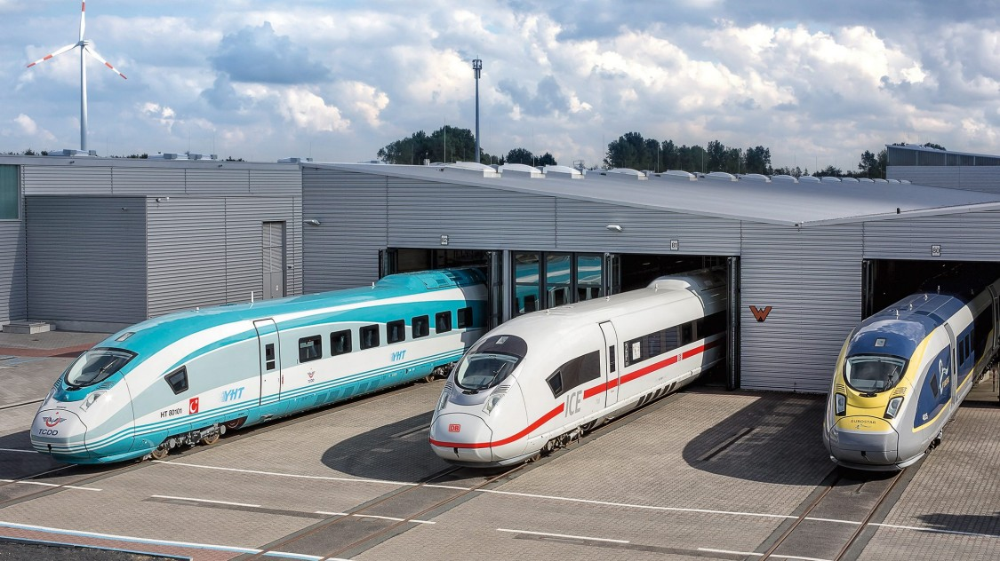
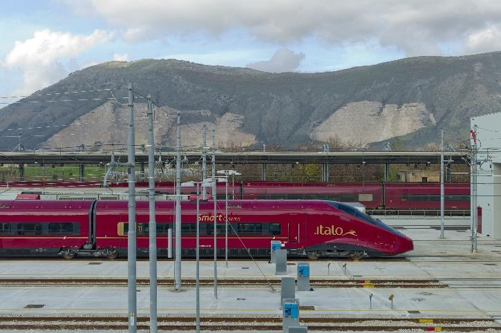
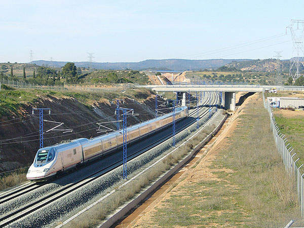

1. L0 Series Maglev, 375 mph, Japan

The L0 Series (Japanese: L0 ゼ ロ Hep Hep Hep, Hepburn: Iru-Zero-KE, "El Zero Series") is a high-speed maglev train developed and tested by the Central Japan Railway Company (JR Central). JR Central plans to use the L0 series on the Cho Shinkansen railway line between Tokyo and Osaka, which is under construction.
The L0 series uses Japanese-designed SCMaglev systems. Nippon Shario, a subsidiary of Mitsubishi Heavy Industries and JR Central, is making fourteen pre-production vehicles.
The seven-car train set a land speed record for rail vehicles of 603 km / h (375 mph) on 21 April 2015. Trains are planned to run at a maximum speed of 500 km / h (310 mph), offering a travel time of 40 minutes between Tokyo (Shinagawa station) and Nagoya and 1 hour of 7 minutes between Tokyo and Osaka.Source
Read More
2. TGV POS, 357.2 mph, France

TGV (French: Train a Grand Vites, "high-speed train") is France's Intercity high-speed rail service operated by SNCF. The SNCF worked on the high-speed rail network from 1966 to 1974 and presented the project to President Georges Pompidou who approved it. Originally designed as turbotrines powered by gas turbines, the TGV prototype evolved into electric trains with the 1973 oil crisis. In 1976 SNCF ordered 87 high-speed trains from Alstom. After the inaugural service between Paris and Leon on the LGV Süd-est (LGV for "high-speed line") in 1981, the network centered on Paris expanded to connect with major cities in France (including Marseille). Has occurred, Lille, Bordeaux, Strasbourg, Rennes, and Montpellier) and in neighboring countries on a combination of high speed and traditional lines. The TGV network in France carries about 110 million passengers a year.
This allows for a train to engage in emergency braking to request within seconds after all the train to reduce its speed; If a driver does not react within 1.5 km (0.93 mi), the system overrides the control and automatically reduces the train speed. The TVM protection mechanism enables the TGV to use the same line every three minutes. Source
Read More
3. Harmony CRH 380A, 302.0 mph, China

The CRH380A Hexie is a Chinese electric high-speed train that was developed by CSR Corporation Limited (CSR) and is currently manufactured by CSR Qingdao Sifang Locomotive & Rolling Stock Co., Ltd. As a continuation of the CRH2-380 program it both replaces foreign technology in the CRH2 with Chinese developments and increases its top speed. The CRH380A is designed to operate at a cruise speed of 350 km/h (217 mph) and a maximum speed of 380 km/h (236 mph) in commercial service. The original 8-car train-set recorded a top speed of 416.6 km/h (258.9 mph) during a trial run. The longer 16-car train-set reached 486.1 km/h (302.0 mph).
CRH380A is one of four Chinese train series which have been designed for the new standard operating speed of 380 km/h (236 mph) on newly constructed Chinese high-speed main lines. Officially, it is the only series of the four not based on a foreign design, and although it was not produced under a technology transfer agreement, there have been accusations that it is based on unlicensed Shinkansen technology.
The other three series are CRH380B, which uses technology from Siemens, CRH380C, with technology from Hitachi, and CRH380D, with technology from Bombardier Transportation.Source
Read More
4. Shanghai Maglev, 268 mph, China

The Shanghai maglev train or Shanghai Transrapid is a magnetic levitation train (maglev) line that operates in Shanghai. The line is the third commercially operated maglev line in history (after the British Birmingham Maglev and the German M-Bahn), the oldest commercial maglev still in operation, and the first commercial high-speed maglev with cruising speed of 431 km/h (268 mph). It is also the fastest commercial electric train in the world.Source
Read More
5. HEMU-430X, 267 mph, South Korea

HEMU-430X (standing for High-Speed Electric Multiple Unit 430 km/h eXperimental) is a South Korean high-speed train intended for a maximum speed of 430 km/h (267 mph). On March 31, 2013, it achieved 421.4 km/h in a test run, making South Korea the world's fourth country after France, Japan and China to develop a high-speed train running above 420 km/h. The main new feature of the train compared to older South Korean high-speed trains is distributed traction. The commercial versions of the trains, tentatively named the EMU-260 and EMU-320, will be delivered to Korail in 2020–2021. Source
Read More
6. Fuxing Hao CR 400AF/BF, 260 mph, China

Fuxing (also known as the CR series EMU, or as the Fuxing Hao) is a series of high-speed and higher-speed EMU trains operated by China Railway High-speed (CRH) and developed by CRRC, which owns the independent intellectual property rights. Initially known as the China Standardized EMU, development on the project started in 2012, and the design plan was finished in September 2014. The first EMU rolled off the production line on 30 June 2015. Source
Read More
7. Frecciarosa 1000, 250 mph, Italy

The Frecciarossa 1000, also known as the ETR 1000, is a high-speed train operated by Italian state railway operator Trenitalia. It was co-developed as a joint venture between Italian rail manufacturer Hitachi Rail Italy (former AnsaldoBreda) and multinational conglomerate Alstom (former Bombardier Transportation). Both design and production work were divided between the two partner companies.Source
Read More
8. Siemens Velaro, 250 mph, Spain

Siemens Velaro is a family of high-speed electric multiple unit trains built by Siemens and used in Germany, Belgium, France, the United Kingdom, the Netherlands, Spain, China, Russia and Turkey. The Velaro is based on the ICE 3M/F high-speed trains manufactured by Siemens for the Deutsche Bahn (DB). The Deutsche Bahn were the first to order Siemens high speed trains; it ordered 13 of these units in 1994, the Nederlandse Spoorwegen (NS) 4 units. The trains were delivered in 1999 for service. The trains were labelled and marketed as the Velaro by their manufacturer, Siemens.Source
Read More
9. AGV Italo, 224 mph, Italy

The AGV (acronym for French: Automotrice à grande vitesse) is a standard gauge, high-speed, electric multiple-unit train designed and built by Alstom.
Alstom offers the AGV in configurations from seven to fourteen carriages, seating 245 to 446 persons. The trains are constructed from units comprising three cars (each with one transformer and two traction electronics packages located underneath the cars) and single-car driver-trailers. The maximum commercial speed is 360 km/h.
Design of the train took place through the early 2000s, with a prototype, "Pégase", produced in 2008. Italian transport company NTV ordered 25 trains in 2008 with services beginning in 2012.
According to Alstom, the advantages of the AGV are: increased seating area per train length (compared to a single-deck TGV); safety and maintenance advantages of the Jacobs bogie articulation design as well as higher energy efficiency from permanent-magnet synchronous motors.Source
Read More
10. Talgo 350, 217 mph, Spain

Patentes Talgo, a Spanish company, developed Talgo 350 (T350). This very high-speed train entered the service with the name RENFE AVE Class 102. Besides, it started its journey on the Madrid-Barcelona and Madrid-Valladolid lines in Spain. The train is also known as Pato as its nose resembles the beak of a duck.
Spain commenced the trial runs of the entirely constructed prototype in 2002. Additionally, the designers designed the T350 train to be optimally aerodynamic to handle air pressure and air currents at high speeds. Its main feature is the high redundancy level in traction between rail and auxiliary systems. Moreover, it has a lightweight, airtight, and pressurized car body to comfortably pass through tunnels and crossings.Source
Read More